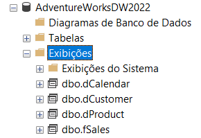
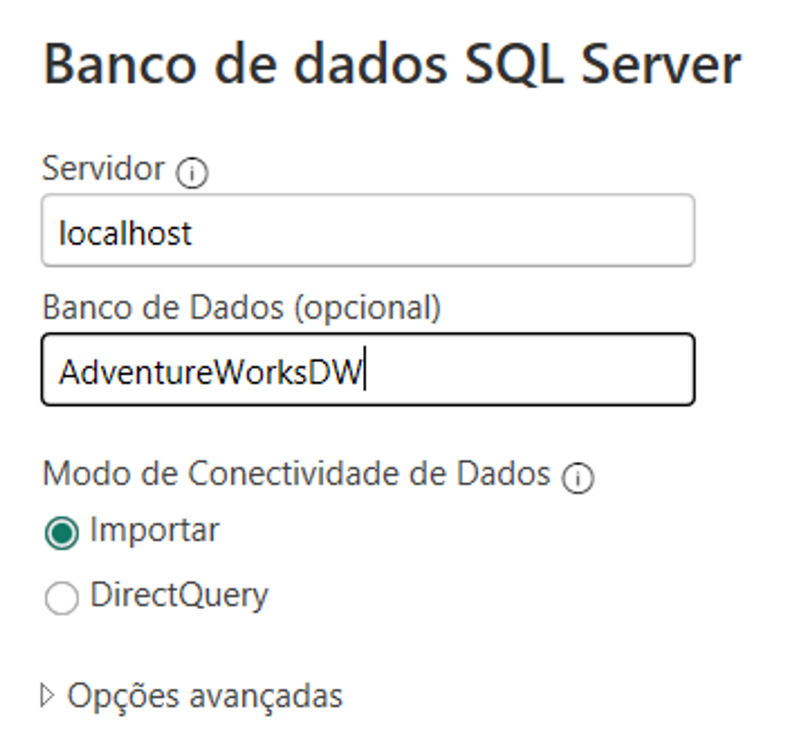
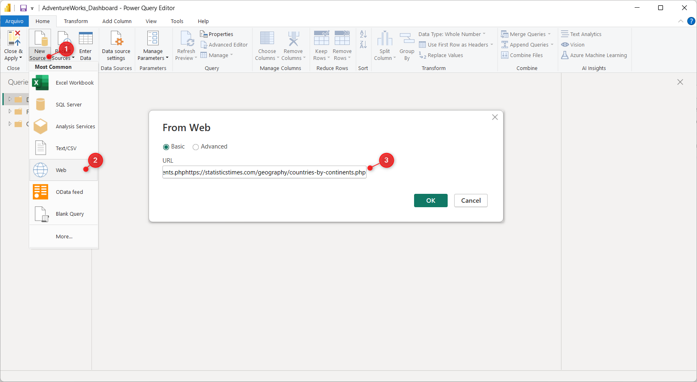
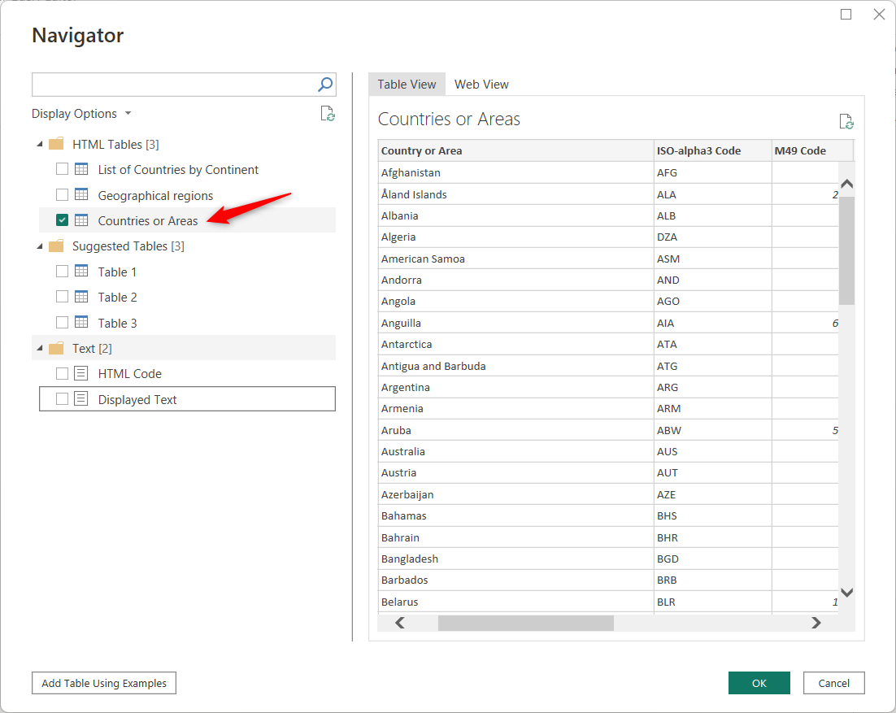
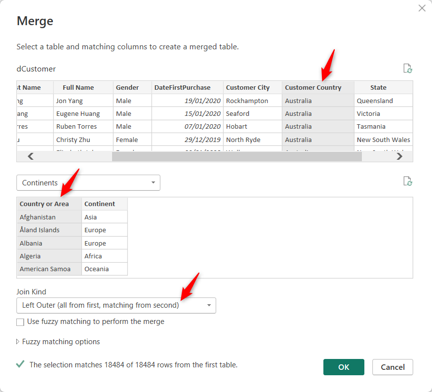

Dashboard AdventureWorks PowerBI
1. Overview
Link to Online Dashboard: Sales Overview
The main objective of this project is to create and publish an interactive Power BI dashboard using the Adventure Works dataset. This dataset, provided by Microsoft, serves as an excellent practice environment to demonstrate skills in SQL, Microsoft SQL Server, and Power BI.
The data can be found at: AdventureWorks Sample Databases - SQL Server | Microsoft Learn
1.1 Objectives
- Demonstration of Skills: Throughout this project, we intend to demonstrate our expertise in SQL, Microsoft SQL Server, and Power BI by transforming raw data into actionable visualizations.
- Interactive Dashboard: Our focus is to build an interactive and user-friendly dashboard that allows easy exploration of the Adventure Works dataset.
- Data Visualization: Leveraging the capabilities of Power BI, we will create impactful visualizations to reveal patterns, trends, and crucial business insights.
1.2 Project Structure
The project is organized into distinct stages:
- Data Extraction and Cleansing: We will start by obtaining the Adventure Works dataset and performing data cleansing using SQL in Microsoft SQL Server Management Studio (SSMS).
- Import Data into Power BI: Next, we will import the cleaned dataset into Power BI for analysis.
- Data Enrichment with Web Scraping: We will enhance the dataset by adding continent information using web scraping and query merging.
- Data Modeling: In this stage, we will organize and structure the data model in Power BI to gain better insights.
- Creating Visualizations: The final stage involves creating interactive charts andles to present key findings.
2. Data Extraction and Cleansing in SSMS with SQL
The first step is to download and update the data using the SQL code provided by Microsoft in this GitHub Repository.
After downloading the backup file (.bak), restore the database in the Microsoft SQL Server Management Studio (SSMS) and perform the update. We can see all available tables for our analysis:

We should also check if the update was successful by querying the years in one of theles. I noticed that the sales seem to have been updated, although the years in the "Dimension Date"le have not been updated.
Therefore, I created a new datele with the SQL code, which creates the DateKey column (to link thele with others) and FullDate. The rest of the columns like Day, Month, Year, etc., can be easily extracted from these columns in Power BI.
CREATELE DimDateNew (
DateKey INT PRIMARY KEY, FullDateAlternateKey DATE
);
DECLARE @StartDate DATE = '2019-01-01';
DECLARE @EndDate DATE = '2023-12-31';
DECLARE @CurrentDate DATE = @StartDate;
DECLARE @DateKey INT = YEAR(@StartDate) * 10000 + MONTH(@StartDate) * 100 + DAY(@StartDate);
WHILE @CurrentDate <= @EndDate BEGIN INSERT INTO DimDateNew (DateKey, FullDateAlternateKey)
VALUES
(@DateKey, @CurrentDate);
SET
@CurrentDate = DATEADD(DAY, 1, @CurrentDate);
SET
@DateKey = YEAR(@CurrentDate) * 10000 + MONTH(@CurrentDate) * 100 + DAY(@CurrentDate);
END;
Now, we organize the dimensions and factsles we need and create the views for them. It is also possible to download the CSV file and load it into Power BI. However, I prefer to create views, as PBI can also connect to the database and load only the views. This way, if we need to add a column to anyle, we just change the SQL code, and after execution, Power BI will update the data, without the need to save and load another CSV file.
--------------------------------
----Creating Fact Sales View----
--------------------------------
CREATE VIEW fSales AS
SELECT
fis.[ProductKey],
fis.[OrderDateKey],
fis.[DueDateKey],
fis.[ShipDateKey],
fis.[CustomerKey],
dg.[EnglishCountryRegionName] AS StoreCountry,
-- Country of the store where the product was bought
fis.[SalesOrderNumber],
fis.[SalesAmount]
FROM
FactInternetSales fis
JOIN DimCustomer dc ON fis.CustomerKey = dc.CustomerKey
JOIN DimGeography dg ON fis.[SalesTerritoryKey] = dg.[SalesTerritoryKey]
WHERE
fis.OrderDateKey BETWEEN '20200101'
AND '20221212';
---------------------------------------
----Creating dimension Product View----
---------------------------------------
CREATE VIEW dProduct as
SELECT
p.[ProductKey],
p.[ProductAlternateKey] AS ProductItemCode,
p.[EnglishProductName] AS [Product Name],
ps.EnglishProductSubcategoryName AS [Sub Category],
-- Joined in from Sub Categoryle
pc.EnglishProductCategoryName AS [Product Category],
-- Joined in from Categoryle
p.[Color] AS [Product Color],
p.[Size] AS [Product Size],
p.[ProductLine] AS [Product Line],
p.[ModelName] AS [Product Model Name],
p.[EnglishDescription] AS [Product Description],
ISNULL (p.Status, 'Outdated') AS [Product Status] --Changed Status from Null to 'OutDated'
FROM
DimProduct as p
LEFT JOIN dbo.DimProductSubcategory AS ps ON ps.ProductSubcategoryKey = p.ProductSubcategoryKey
LEFT JOIN dbo.DimProductCategory AS pc ON ps.ProductCategoryKey = pc.ProductCategoryKey
----------------------------------------
----Creating dimension Customer View----
----------------------------------------
CREATE VIEW dCustomer as
SELECT
c.customerkey AS CustomerKey,
c.firstname AS [First Name],
c.lastname AS [Last Name],
c.firstname + ' ' + lastname AS [Full Name],
CASE c.gender WHEN 'M' THEN 'Male' WHEN 'F' THEN 'Female' END AS Gender,
c.datefirstpurchase AS DateFirstPurchase,
g.city AS [City],
-- Joined in Customer City from Geographyle
g.EnglishCountryRegionName as [Country],
-- Joined in Country from Geographyle
g.StateProvinceCode as [State] -- Joined in State from Geographyle
FROM
DimCustomer as c
LEFT JOIN dbo.dimgeography AS g ON g.geographykey = c.geographykey
----------------------------------------
----Creating dimension Calendar View----
----------------------------------------
CREATE VIEW dCalendar AS
SELECT
*
FROM
DimDateNew
WHERE
DateKey BETWEEN '20200101'
AND '20221212'
After this, we can see that the views have been created in the "View":
4. Import Data into Power BI
Now that we have our data, we can connect to the SQL server in Power BI:
And then, we select the views we created:

4.1 Adding the Continent Column
Considering Adventure Works' global business, we decided to include a Sales by Continent chart in the dashboard. However, the initial "Geography" dimensionle did not have a continent column. To achieve this, simply search for a list of countries and their continents on the web.
Instead of downloading and creating a newle, in the Power BI Query Editor, click on "New Source" > "Web" and paste the link to the site with countries and continents.
Power BI will find someles on the site, and we'll select the one we're looking for:
After loading thele in the Query Editor, we can perform a "Merge Queries" with the dCustomerle by country and add the continent column to it.
5. Data Model
Now we can link all theles and implement a Star Schema model, allowing the dimensions to act as filters for analysis.
Note that all dimensions are linked to the factsle in a one-to-many relationship:

6. Data Visualization
In this section, I will describe the layout of the dashboard hosted on the Microsoft server, which can be accessed via this link: Sales Overview

6.1 KPI Tooltip:
In the Budget vs. Sales over Time line chart, we have a KPI Tooltip, and when we hover over it, we can see dynamic details of the Budget and Sales for that specific month.

To do this, you need to download the Dynamic KPI Card by Sereviso under the "Get More Visuals" options:

Next Steps
- HR Analysis: Explore the distribution of employees by department, job title, and location. Analyze employee tenure and performance metrics.
- Customers: Analyze customer behavior, segmentation, loyalty, and churn rate to improve customer satisfaction and retention.
- Profit Analysis: Visualize profit margins, cost analysis, and profit by product category to optimize profitability.
- Sales Forecasting: Explore sales trends, create forecasting models, and analyze the sales pipeline for better planning.
- Inventory Management: Optimize inventory management by visualizing inventory turnover, stockout analysis, and implementing ABC analysis.
- Marketing and Campaigns: Measure the effectiveness of marketing campaigns, track customer responses, and analyze marketing ROI.
Thank you for reading my project
If you have any questions or suggestion, feel free to get in touch.
Click below to return to the main page.